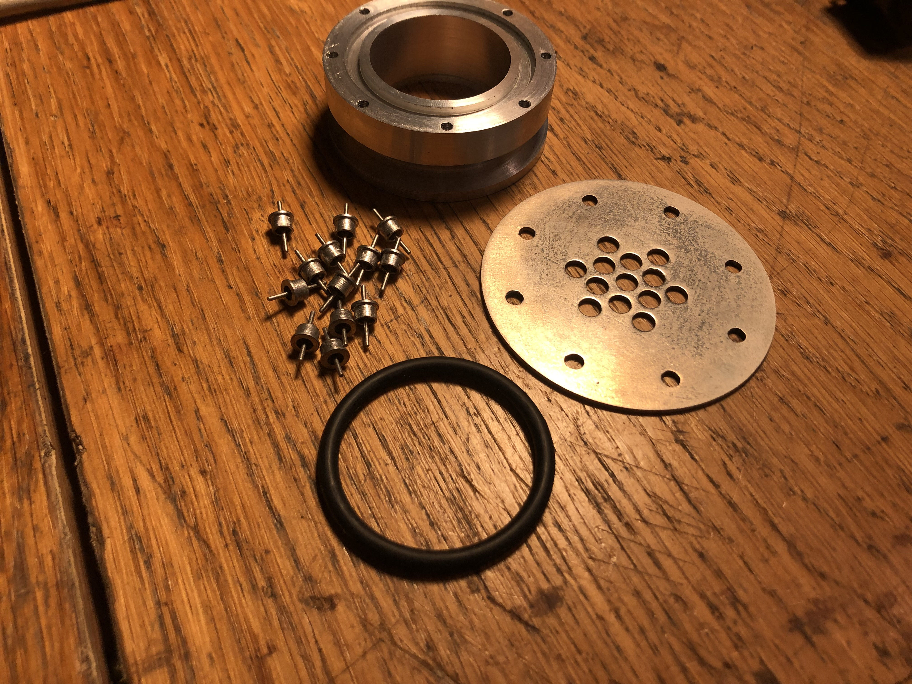
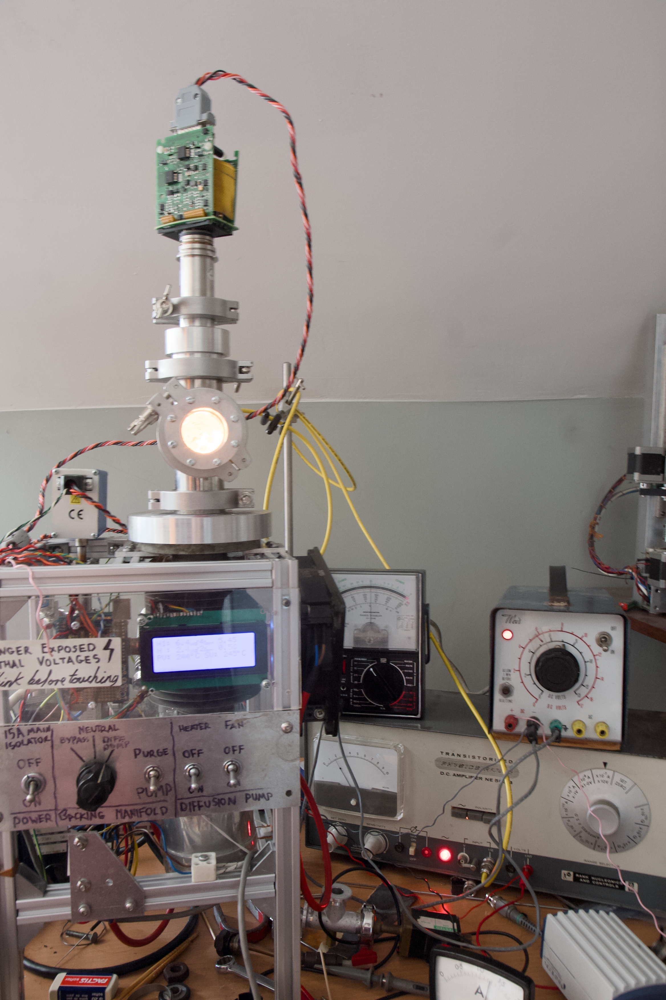

DIY Hot Cathode Gauge
I made my "high" vacuum chamber to do experiments with hot cathodes, so I needed some way of getting electrical signals in without letting air in. Vacuum feedthroughs do exactly this and are readily avilabel commercial products. Unfortunately, they're far too expensive for me. I had to make my own.
The design I settled on uses low capacitance glass to metal feedthroughs not designed for vacuum but for hermetically sealed electronics. I managed to find these for sale for 10s of pence each online. I used soft solder to connect them to a brass plate which was nickel plated on the vacuum side and bolted to a KF40 flange with an o ring seat. Except the o-ring, and the individual feedthroughs, I made all of the components from scratch. They are shown below:
I made an identical flange to hold a glass window, so I could see the cathode glow. The window was sold by a watch parts company and is 3mm thick and ~4cm in diameter, I have no idea what kind of absurd watch it is meant for but its a convenient source of thick glass windows! This is shown below.

I used this hardware to make a hot cathode vacuum gauge, this is a kind of ionisation gauge and strictly speaking a kind of triode thermionic vavlve. It is shown in operation below. The three electrodes are a hot cathode (the glowing tungsten fillament), an anode grid (the round coiled spring shaped electrode (in fact made from a coil spring)), and the ion collector (a hard to see tungsten wire in the centre of the cylindrical grid).

Electrons are emitted by thermal emission from the fillament, and accelerate to the grid (biased to +100v in my setup). The collector is the most negative electrode (20v below the cathode for me) and so in a perfect vacuum, no current would flow to it (it repels the electrons). However, a small partial pressure of gas results in some gas molecules being ionised. Positive ions are attracted to the cathode and result in a current proportional to the pressure.
As expected, I found that the collector current depends very strongly on the emission current. For this experiment, I used a meter to measure the emission current and adjusted it by hand by controlling the fillament voltage (using the variable transformer seen in the second picture). This was delicate and ultimately inaccurate as the current drifted quickly. Furthermore, for lack of more floating power supplies, the fillament bias voltage was controlled by a resistor to ground so also varied with emission current. Because of the limitations of my vacuum chamber, I was only able to test the gauge over a decade of pressure from 0.01mTorr to 1mTorr.
With these limitations, I have not been able to determine the sensitivity of the gauge, in fact all I know is that the current does in fact decrease with decreasing pressure. To make a useful gauge, I need to design a circuit to regulate emission. The Stanford Research Systems Bayard-Alpert Ionization Gauges Application Note makes clear the necessity for good regulation of emission current. I read this before designing the gauge but am apparently lazy!
If you are familiar with vacuum gauges, you might recognise the layout of the electrodes I'm using from a Bayard-Alpert gauge. You might also notice that my biases are much less than those used in a commercial gauge. This likely also hurts performance, so for a future design, I will have to make a ~250V DC bias supply.